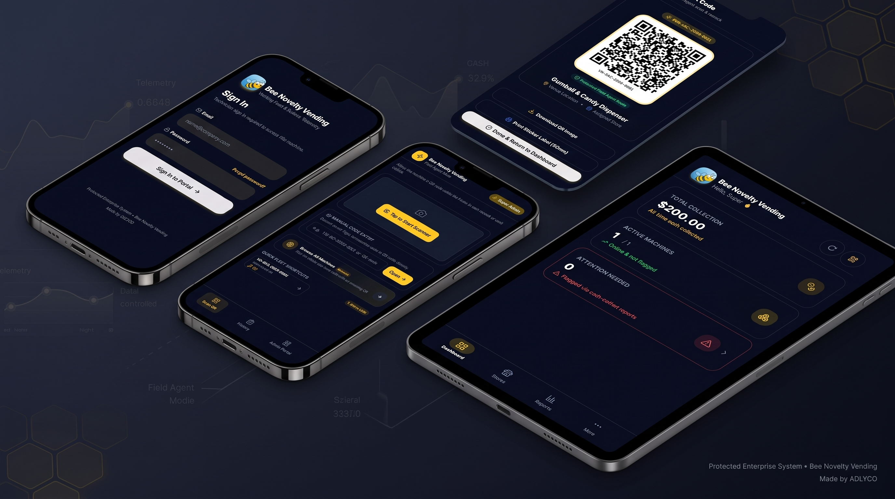

Field Agent QR Workflows
Scan-to-restock and cash-collection flows with manual code entry fallback, plus printable QR/sticker labels per machine.
 MD TORIKUL ISLAM HIRA
MD TORIKUL ISLAM HIRA
A multi-tenant vending machine fleet management platform: field-agent restock and cash-collection workflows, admin fleet management, and financial reconciliation reporting, built as a full-stack monorepo product.

A pnpm-workspace monorepo with a typed, fail-fast configuration philosophy end to end.
apps/api
apps/web
postgres-js driver · packages/database
packages/shared-types · packages/validation (Zod)
Node.js 22+ · pnpm 11
Postgres, API, Web, Nginx reverse proxy
Built around two real operational roles — field agents in the field, admins running the fleet.
Scan-to-restock and cash-collection flows with manual code entry fallback, plus printable QR/sticker labels per machine.
Real-time view of active machines, units flagged for attention, and total lifetime cash collected across the fleet.
Store-level and fleet-wide collection reporting built for accurate cash reconciliation.
Supports multiple stores and roles — Super Admin, Admin, and Field Agent — on a single platform.
JWT-secured API and bcrypt-hashed credentials, with a fail-fast boot: the API and DB client refuse to start if required secrets are missing — no hardcoded fallbacks.
Postgres, API, Web, and an Nginx reverse proxy orchestrated via Docker Compose for consistent local and production parity.
apps/api, apps/web, packages/database, packages/shared-types, packages/validation.DATABASE_URL, JWT_SECRET, SUPER_ADMIN_EMAIL/PASSWORD, etc.) is validated at boot — no silent defaults for anything security-sensitive.POST /api/v1/users), not environment variables.db:push for local dev, db:generate for versioned SQL migrations.docs/ knowledge base.If you need a production-grade SaaS platform — multi-tenant, secure by default, and built for real operational workflows — let's talk about your goals.